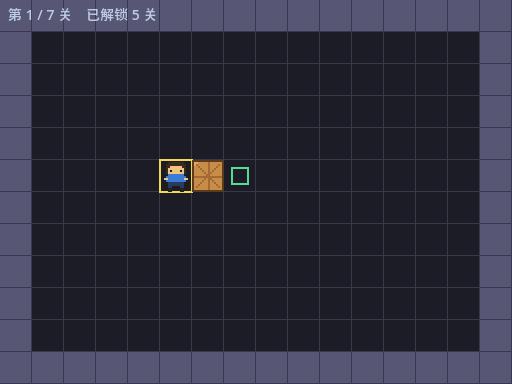
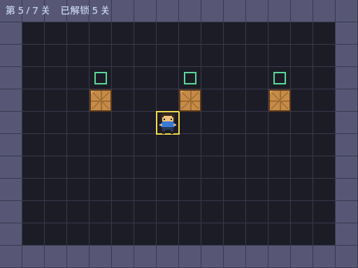
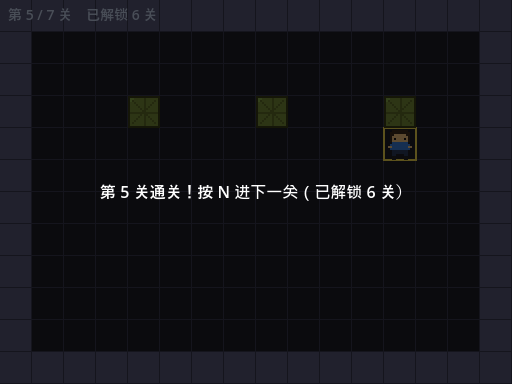
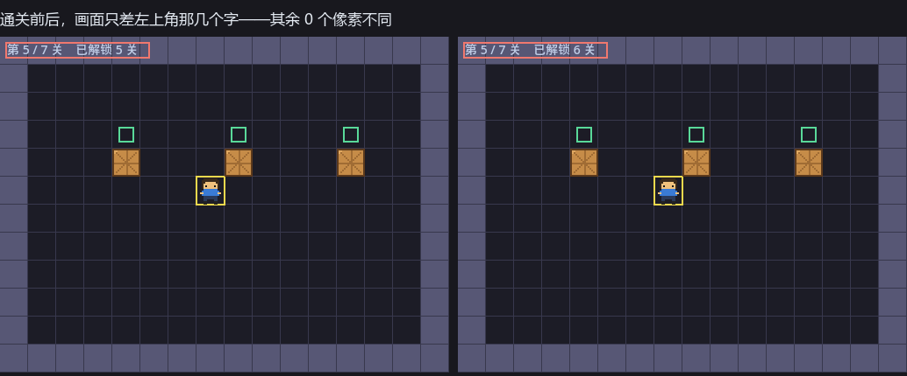
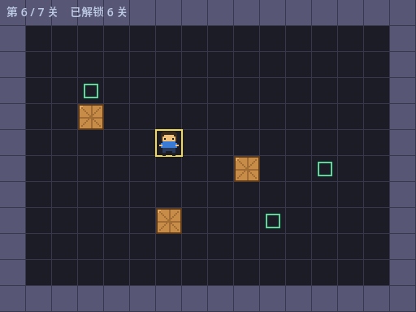
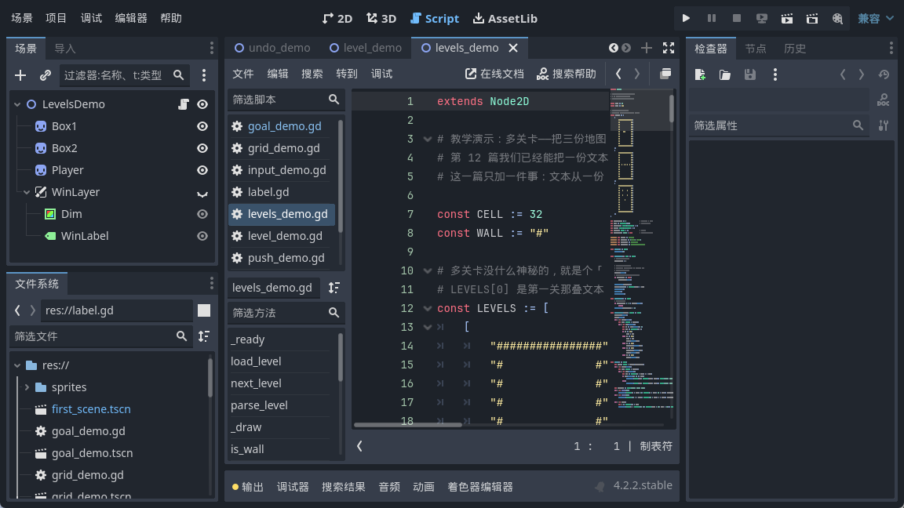
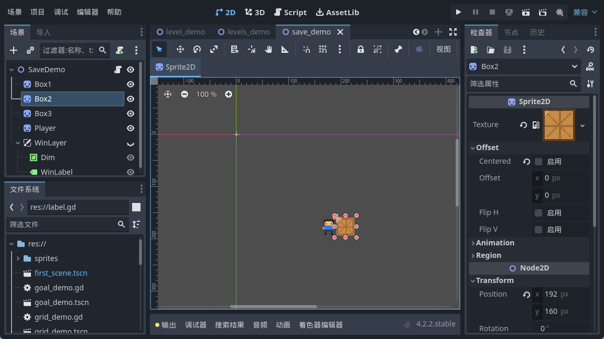

大家好，我是「山岚的运维笔记」。
上一篇已经可以一关一关咁推落去。不过熄咗游戏再开返，又由第一关开始，通咗几关都冇人记得。
今天把通关进度写进一个文件。七关里默认开放五关，后两关得靠通关挣。
先解决一个很实在的问题：文件写在哪里。
你可能会想写到游戏资源目录。唔好谂，千祈唔好咁做。那个目录在导出之后是被打进包里的，只读，往里写要么写不进去，要么写完下次启动就没了。
引擎给这类需求留了个专门的用户数据目录，不同系统落点不同。我这台 Windows 上，它在用户目录下面的 AppData 里。想自己确认，代码里打印一句就能看到真实路径，调试的时候很好使。
存这种小配置，引擎自带一个配置文件的类型，写出来的格式跟老式 ini 一模一样，看得懂也改得动。
三个动作：读进来、取某一项、改完再写回去。第一节名随便起，自己分分类就行。
这个最容易漏。读取的时候找不到文件，它会返回一个错误码——我在自己机器上实测是 7。它不会帮你建一个空的，也不会返回默认值，它就那么返回了。
你要是不判断，下一句取值拿到的就是个不知道是什么的东西。所以得先判错误码，不对就用默认值直接返回。
取值的函数有个第三个参数，是兜底值：文件存在、但里面没有那一项时用它。什么时候会这样？你以后加咗新字段，老玩家嘅存档入面冇呢一项——冇呢个兜底值，老玩家一升级就即刻崩。
呢行睇落好似多余，其实救过我。总关卡数是会变的，你要是哪天删了两关，存档里还写着已解锁七关，第七关早没了，一进去就数组越界。
我实测过：往文件里硬写一个 999，读回来被夹成 7，正好等于总关卡数。
解锁的逻辑就一句：通关第 N 关，把第 N+1 关放开。
还有个细节：存档要立刻写，别攒着。我见过不少教程把存档放在退出回调里。听着合理，实际很脆——程序崩了、玩家直接关窗口、手机来电话切后台，这些情况下退出回调不一定跑得起来。玩家通了一关，下次发现没解锁，那是要骂人的。
解锁这事儿一次也就几十字节，写就写了。
关卡入口也得跟着收一下，没解锁的关卡不放行。门不锁死，解锁功能就是摆设。

连按几次 N 到第五关。再按一次 N——画面纹丝不动。我将前后两张截图做过像素比对，0 个像素唔同，第六关系真系被拦住咗。

把第五关通了，面板上直接写明解锁了几关。

这时候按 R 重开本关，跟通关前的画面比一比。

整幅图只有 55 个像素不一样，全在左上角那个数字上，5 变 6。把左上角抠掉，游戏区是 0 个像素不同。呢个数字我几满意——说明解锁净系改咗佢应该改嘅嘢，冇掂过其他。

它就在用户数据目录下，用记事本打开是这样：
一个节名，一行 unlocked=6。
就呢四行，一眼睇得明。这也是我选这个方案的原因：出问题的时候你能直接打开看，不用写个专门的读档调试工具。
当然它有代价——玩家改这个文件就能全解锁。小游戏无所谓，要防的话得加校验或者存成二进制，那是另一回事了。


今天这个游戏第一次有了「记忆」。
存档这事儿真正要操心的就三处：写到哪里、第一次没有文件怎么办、什么时候写。
为什么默认是 5 关？这是我后来做完整版时定的数：两百多关全放出来，新手一进来就眼花，看着像劝退；只放一关，又显得抠门。5 关啱啱好够人摸清玩法，又唔会拣到眼花。
而家进度存得住喇。不过玩家仲系只可以一关一关咁推，想返转头重打第三关，就要由头按 N。下一篇做选关界面，把所有关卡摆成按钮网格，锁着的挂把锁。
进度存住喇，值得点赞、在看来一套；想睇选关界面点做嘅，关注「山岚的运维笔记」，下一篇接着。评论区有问必回。